Main Characters (主要人物)
澈 & 景池 — “她是他的春天。”
在一个古老的昨日，我的结局都已写好。这里将是我的彼岸。
如果我将想念放置在天文宇宙的尺度上，让浩瀚地无法计算的庞大来填充我，那我对你的想念将不再逼仄。播放器里的钢琴音传来，河面上的风起得更轻了，落叶在水上缓慢旋转，映衬着曾经的这些对白。恒星年的秋天有一种奇怪的透明度，情绪像是被放大之后再被收紧，而我们——
我们只是被宇宙的往事所包围。
在离开北部基地的这么多年里，却还是醉心。也许是应该从飞行器的圆盘周期里向外找寻，而后再反应过来，那是一种阔别已久。
“可是景池，如果我真有一天偏离得太远呢？”
“那我就去找你。”
Che & Jingchi — “She is his spring.”
In some ancient yesterday, my ending had already been written. This place will be my far shore.
If I place my longing on an astronomical scale, letting an immeasurable vastness fill the space within me, then perhaps the thought of you will no longer feel so confined. A piano piece drifts from the player. The wind over the river grows softer. Leaves turn slowly on the surface of the water, echoing those conversations we once had. Autumn in a stellar year has a strange transparency. Emotions seem first magnified, then drawn tight again. And we— we are simply surrounded by the past of the universe.
All these years after leaving the Northern Base, I still find myself quietly intoxicated by it. Perhaps one should begin by looking outward, beyond the orbital cycles of the craft, and only then realize that what it’s something I’ve been away from for a long time.
“But Jingchi… what if one day I drift too far away?”
“Then
I’ll come find you.”
Concept - Protoplanet Embryo Initiative (原行星胚胎计划)
"在恒星诞生的尘埃边缘守望未竟之地，等待世界缓慢成形。"
"On the edge of the dust where stars are born, watching over the unfinished land, waiting for the world to slowly take shape."
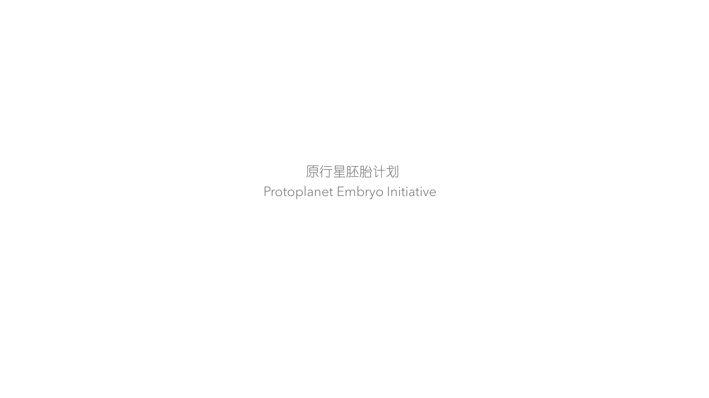
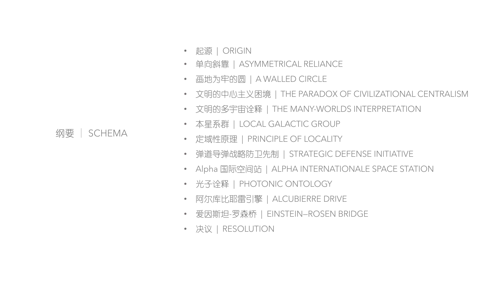
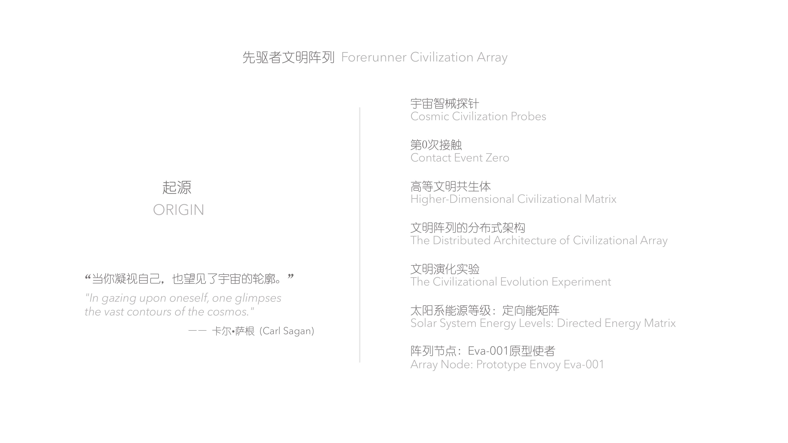
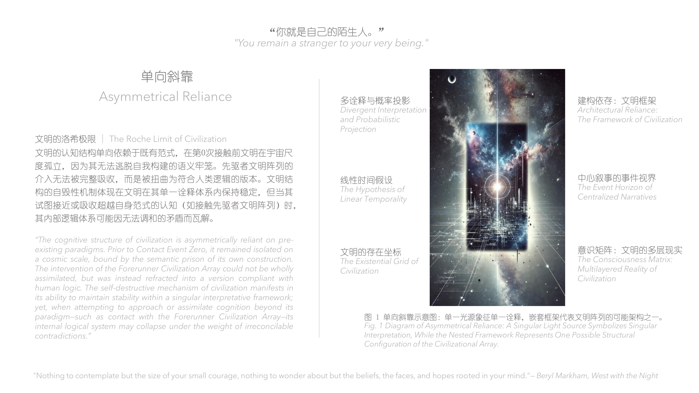
Concept - Heart of the Sea (海之心)
"悬于蔚蓝初生星上的微光栖所，向深海与星际同时敞开。"
"A glimmering habitat suspended above a blue, newly born star, open to both the deep sea and the stars."


Concept - Hexi Corridor (河西走廊)
"历史的遗迹们是被时间压缩的空间节点。人们试图用几何与语义，为文明建立可被往日读取的坐标。空间如何承载文明？"
"无论是河西走廊，还是银河边缘，是同一个问题。"
"Historical relics are spatial nodes compressed by time. People attempt to use geometry and semantics to establish coordinates for civilization that can be read from the past. How can space bear the weight of civilization?
Whether in the Hexi Corridor or at the edge of the Milky Way, it's the same question."
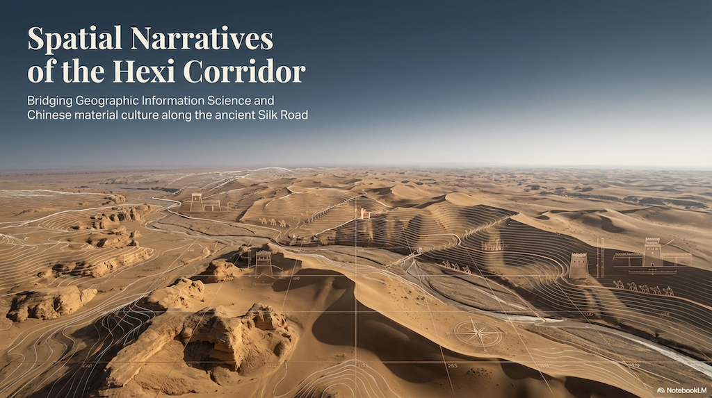
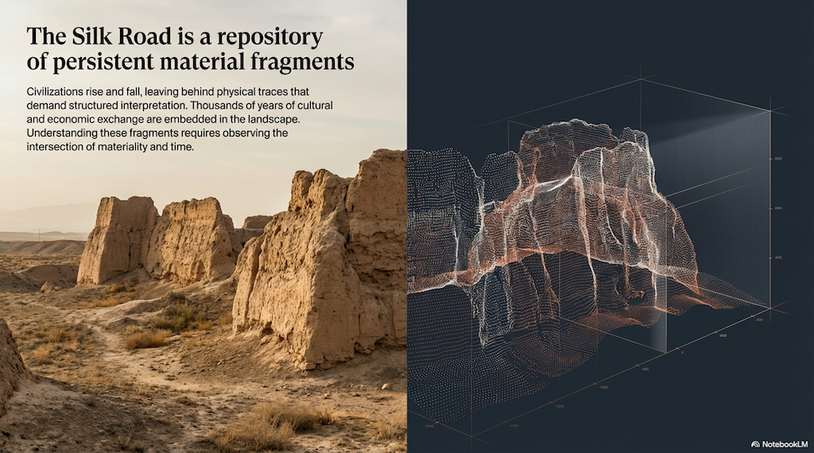
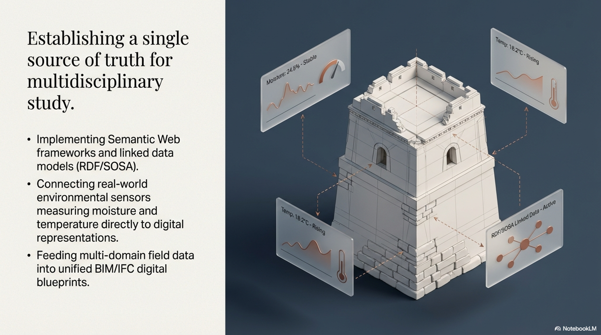
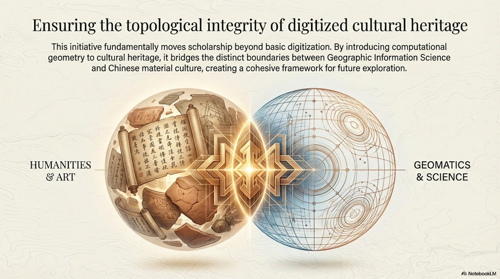
Note: The inspiration comes from a research proposal I wrote for a PhD application. More information can be found here.
The reason I chose Hexi Corridor (Gansu Corridor) to write the research proposal is that, it is my hometown.
Locations - Until We Return to the Stars (模糊界限，等我们又归于星辰)
"流淌的气息能够寻回往日痕迹。我们降落，在一颗孤独星球。我们返回，返回到世界懵懂。"
"Breath in motion finds what once was. We touched down on a solitary planet. We returned, to the world in its unknowing."
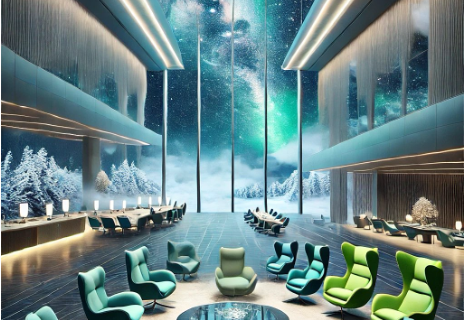
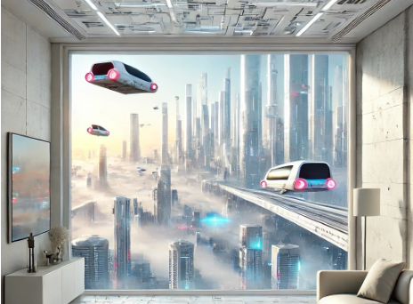
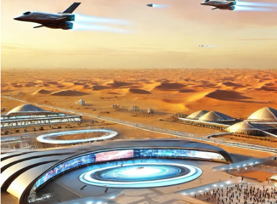